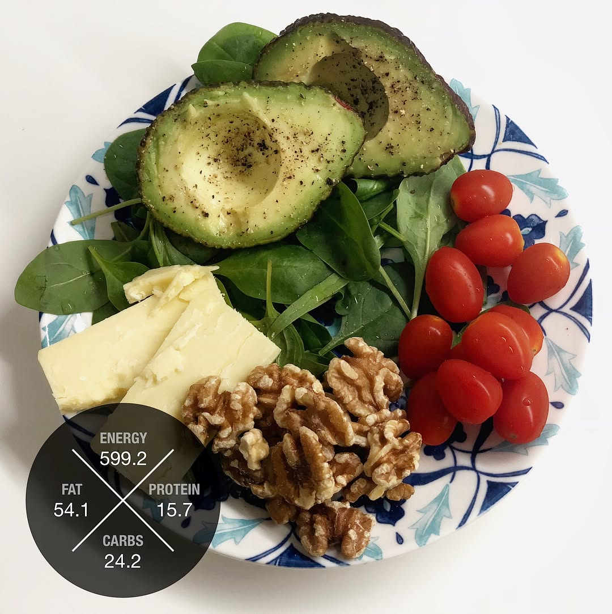

That’s what I call a happy breakfast 😄 👩🏻🍳🙅🏻♀️no cooking effort, just wash and cut! A real time saver when you are late in the morning! 🤤 Very delicious mix of tastes (sweet and sour and juicy and crunchy!!!) 💪🏼❤️ Healthy and well balanced meal rich in macro and micro nutrients! 😩 Only disappointment - I couldn’t have it because I had to go for a blood test that required fasting 🤷🏻♀️ so my lucky triathlete husband enjoyed it for me and I was drooling over the photos that I took before he destroyed this masterpiece 😂 . . . . . Вот что я называю «счастливый завтрак» 😄 👩🏻🍳🙅🏻♀️ не надо готовить, только помыть и порезать! Очень удобно, когда сильно опаздываешь с утра 😬 🤤 очень вкусный микс вкусов (здесь и сладость, и кислинка, и сочность фруктов, и хруст овощей и орехов!!!) 💪🏼❤️ Здоровое и сбалансированное питание, богатое макро и микро элементами! 😩 единственное расстройство - мне этот завтрак не достался, так как надо было идти сдавать анализ крови натощак 🤷🏻♀️ так что наслаждался этим завтраком мой счастливый муж, а я облизывалась на фото, которые успела сделать до того момента как этот завтрак был уничтожен моим триатлонным пожирателем здорового питания 😂 — #superfood #foodsg #homemadefood #powerbreakfast #breakfastlover #irunthisbody #triathlontraining #ironmantraining #swimbikerun #marathontraining #ironmantri #trailrunning #foodblogger #instafood #foodography #orbea #cervelo #specializedbikes #giantbikea #canyonbikes #cyclinglife
2018-05-17 22:09:27
Back to main page